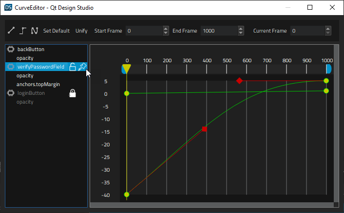

Curves
The Curves view shows the interpolated values of an animated property over the animation range.

When you edit an animation curve, you implicitly edit the easing curves that the underlying system uses to define an animation. The animation curve is an extension to visualize both the value of a keyframe and the interpolation between keyframes simultaneously.
You can use the toolbar buttons to add Linear, Step, or Spline interpolation between two keyframes.
When you set interpolation to Spline, handles appear in Curves that you can use to modify the curve. Select Unify to lock the handle on the left of a keyframe to the one on the right of it so that moving the left handle also moves the right handle.
If the component that contains the animated property has been locked in Navigator, you can select  to unlock it. You can also lock individual easing curves for editing.
to unlock it. You can also lock individual easing curves for editing.
To lock an animation curve, hover the mouse over the keyframe in the list, and then select  .
.
To pin an animation curve, hover the mouse over the keyframe in the list, and then select  .
.
Curves Toolbar
The Curves toolbar contains the following buttons and fields.
| Button/Field | Action |
|---|---|
| Linear specifies that the interpolation between keyframes is linear. | |
| Step uses steps for interpolation between keyframes. | |
| Spline uses bezier spline curves for interpolation between keyframes and displays handles for managing them. | |
| Set Default | Currently not used. |
| Unify | For Spline curves, locks the handle on the left of a keyframe to the one on the right. |
| Start Frame | Specifies the first frame of the curve. |
| End Frame | Specifies the last frame of the curve. |
| Current Frame | Displays the frame that the playhead is currently on. Enter a number in the field to move the playhead to the respective frame. |
Editing Animation Curves
To edit animation curves:
- In the Timeline view, animate at least one property value by inserting keyframes for it.
- Select View > Views > Curves to open the animation curve editor.
- Right-click in Curves, and select Insert Keyframe to add a keyframe.
- Select keyframes to display the easing curves attached to them. To select multiple keyframes, press and hold Ctrl.
Your changes are automatically saved when you close the view.
Deleting Keyframes in Curves
To delete the selected keyframe, select Delete All Keyframes in the context menu.